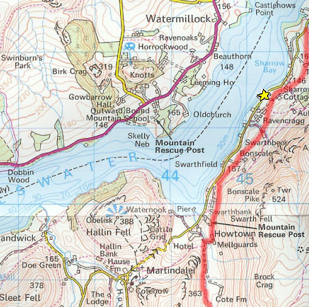
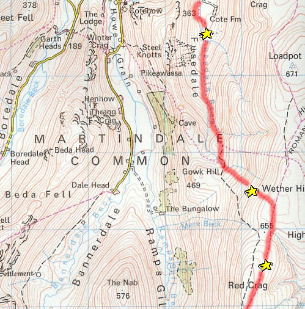
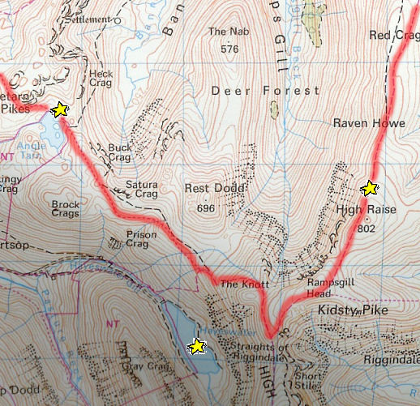
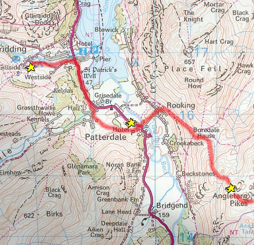

For the first 30 minutes of our journey it was sunny, however, from then onwards unrelenting rain fell. The first few km of Day 2 were easy: we walked on a flat path beside the road. Once we reached Howtown we walked along the valley towards Wether Hill.

The walk along the valley was easy enough although as we went further we realised that the small hill we thought was Wether Hill, was not. Twice we thought we had got to the top just to realise that we were still well off.
Unfortunately the path disappeared so we followed a wall and then just headed straight up. Walking sideways was often necessary and we were taking breaks every 30 seconds of climbing.
Finally we reached the top where we could see almost the whole day's walk as the ridge arched around. The climb to Red Crag was relatively easy although low cloud had descended and so we were sometimes concealed in cloud.

We had lunch just before the ascent to High Raise and this was certainly a low point of the day. It rained, it was very windy as we were at almost 800m , we were emersed in cloud and it was extremely cold. But, having gained encouragement from seeing someone who was trying to cycle what we were walking (which is naturally much harder due to the poor paths and high gradients), we pressed on.
At the top of High Street it was essential that we take the correct turning (up towards 'The Knott') else we, like someone we met up there, would have been taken in completely the wrong direction. After an easy ascent of 'The Knott' our route was all downhill and the cloud had dispersed.
We met the Abingdon teachers on our way to Angle Tarn which comforted our doubts that we may have gone wrong. On reaching Angle Tarn, a place we had marked as 'almost there' before we set off, we knew there wasn't too far to go, and it had even stopped raining for about 20 minutes.

We expected a difficult descent from Angle Tarn and so were pleasantly surprised not to find one. Even though fatigue had set in slightly we made it to Rooking quickly and easily, however, as soon as we reached the bridge across to Patterdale, the sky opened. This was the worst bit of weather on the entire trip and we stayed under cover for some time, slighty low on morale. It didn't stop so we had to continue (walking past a pub in which we saw the teachers having a nice, warm meal and a drink which didn't help us).
The last part of the walk went pretty quickly with everyone concentrating on just getting to camp. On arriving at the campsite we met the other two groups: both whom had arrived a couple of hours previously due to their 'much' easier routes.
It rained almost non-stop that evening and so eating and pitching tent wasn't the most fun experience ever but we were glad the our hardest day was over.